|
| Perfect
Dark Version Beta : Battle |
| Il
y avait 5 Emplacements au lieu de 6, comme le montre la Photo de Gauche.
Au centre, on voit qu'il manque la Partie "Handicaps". Quant
à la Photo de Droite, elle montre le Mode "Touch That
Box". |

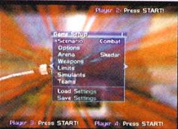
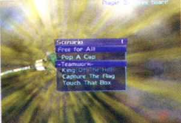
Les Photos ci-dessous montrent que l'on pouvait jouer avec les Armes de Goldeneye.
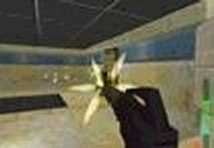 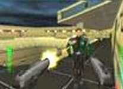 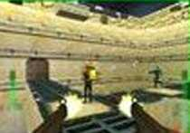 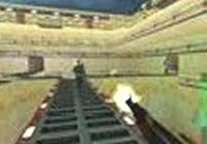 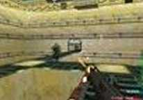 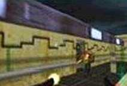 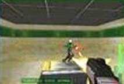 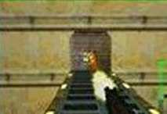
La
Zone 51 !! Rien que çà ! Ca aurait été une super
Arène non ?
Je pense toutefois qu'on pourra un jour la débloquer avec un Code Action
Replay...
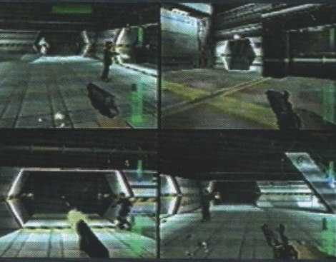 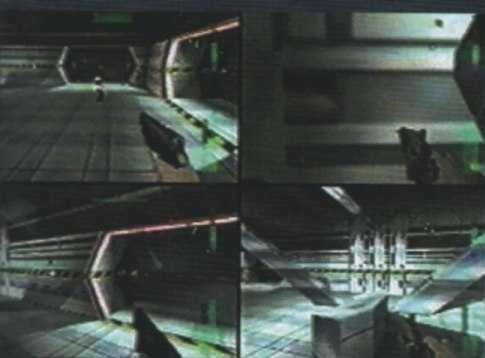
Voici 2 Photos du Grid avant Relookage...
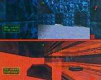 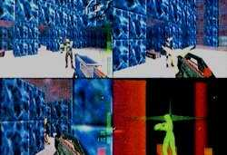
Il y avait des Tableaux au Murs dans Felicity ! Joueur en haut à Gauche... On dirait un Tableau non ?
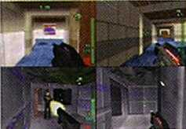
Sur ces 3 Photos ci-dessous, on voit que le Radar a quelque peu changé.
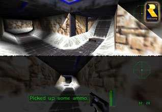 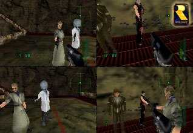 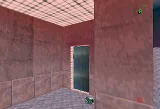
Ci-dessous, on voit que les Ordinateurs (Mode PC Hackeur) ont bien changé, et un Drapeau !
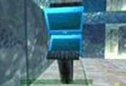 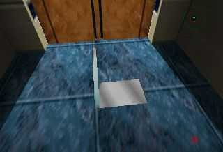